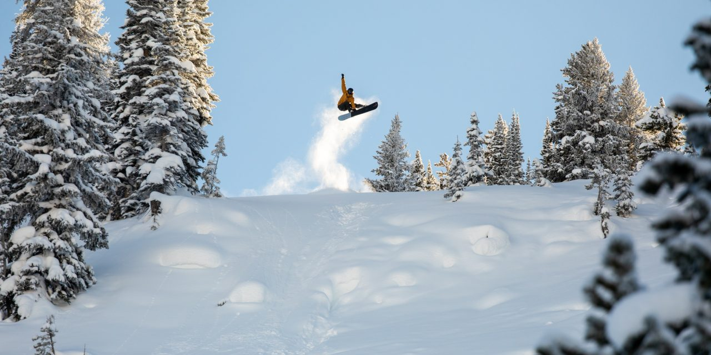
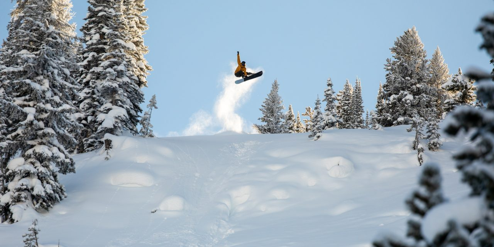

Natural Selection Tour
The Natural Selection Tour is the first unconventional winter sports competition to include Olympians and big mountain film riders. Competitors compete on the most beautiful, raw, and challenging terrain. The first week of the tour took place in Jackson Hole on February 3rd to the 9th. The best snowboarders in the world competed in the deepest powder ever. Zoi Sadowski-Synnott took the first place title for the women and Mark McMorris for the men. T- Bird and Jeff Moran said “This event allowed people to see more aspects of snowboarding. This is what we all know and love about snowboarding. It makes me feel warm inside to know that what we experience as a culture can now be experienced in a really engaging way by people who are not necessarily directly involved in snowboarding. They get to see what it is about our lifestyle, our culture and our community that’s so strong.” The next stop is Baldface Mountain in Canada. The tour had to make a few alterations due to covid restrictions. 10 new athletes will be paired up with a videographer in the backcountry of Canada. The riders best lines will be broadcasted on March 19th.
Who are the Invited Riders?
Men
Beau Bishop
Chris Rasman
Craig McMorris
Dustin Sollors
Mikey Rencz
Women
Spencer O’Brien
Robin Van Gyn
Leanne Pelosi
Marie-France Roy
Check out the highlights from Jackson Hole
Photo Gallery from Jackson Hole
 
